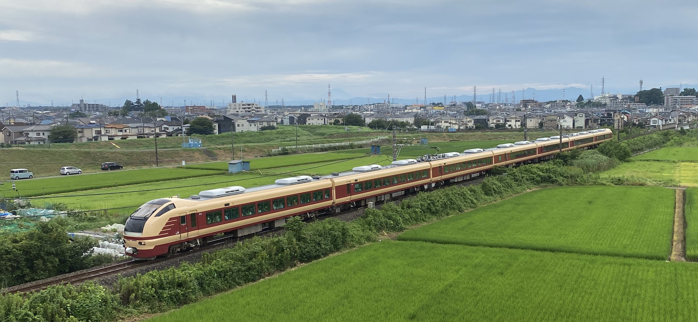
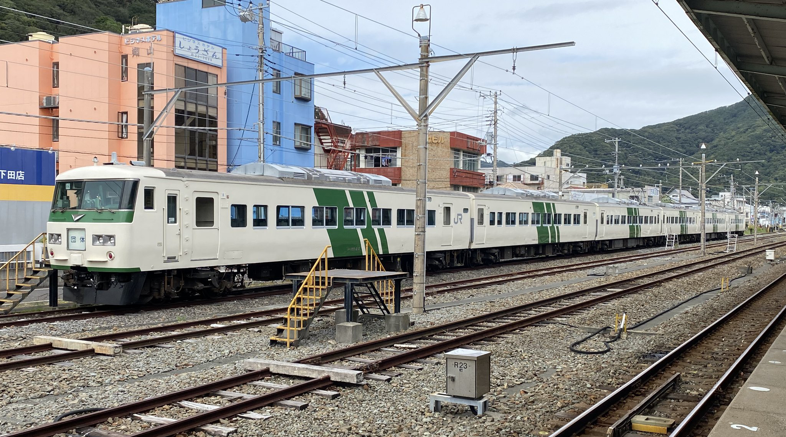
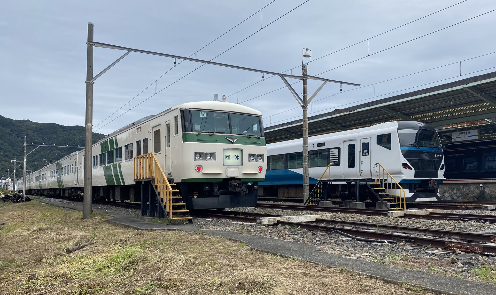

1987年4月1日に旧国鉄が分割民営化した後、国鉄時代から走っていた車両の多くが姿を消した。そんな今でも関東甲信越で国鉄車に乗れる場所を紹介する。
※画像はすべて主による撮影。クリックで拡大縮小。
特急列車として残っているのは「185系」である。一番有名なのは東京～静岡の伊豆急下田を結ぶ「特急踊り子」で使用。2021年に定期運用を引退をしているが臨時列車や団体列車で乗ることができる。
画像は2022年10月、団体列車で乗車。185系がまた伊豆に帰ってきた。
新旧の踊り子車両が並んだ光景は圧巻だ。